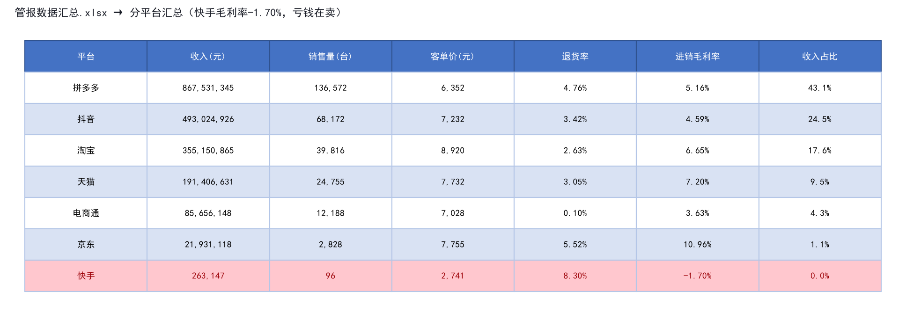
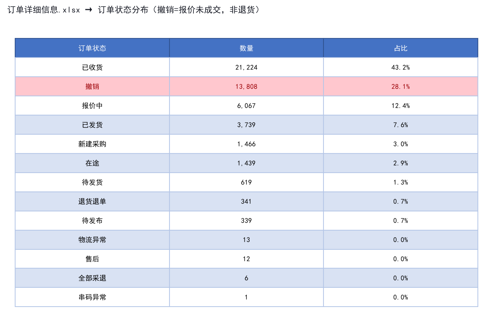
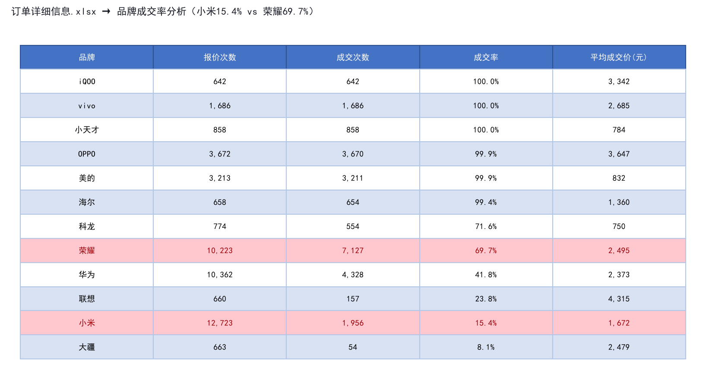
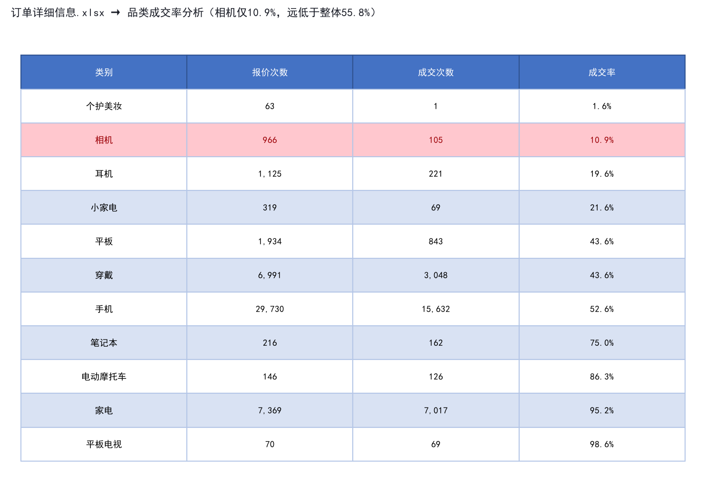
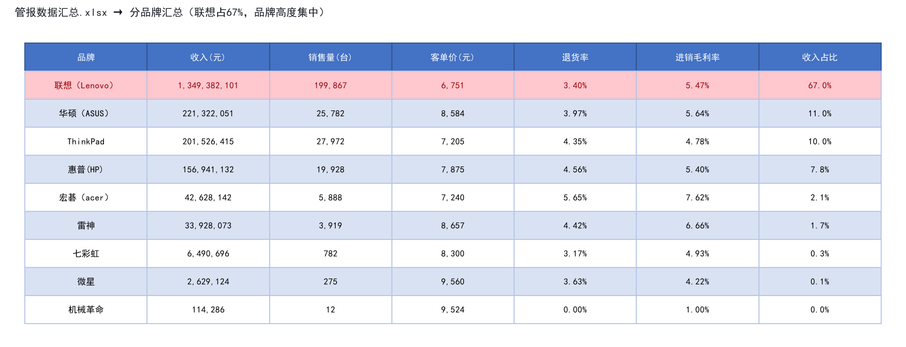

这是一家多品类电商公司的真实销售数据，涵盖PC（笔记本电脑）、手机、家电、穿戴等20个品类，销售渠道包括拼多多、抖音、淘宝、天猫、京东、快手等7个平台。
运营团队每周需要花2天时间从3个系统导出数据、手动VLOOKUP汇总成管理报表。数据散落在管报汇总表、订单明细表（4.9万行）、账单表（15.6万行）中，各岗位（销售/运营/财务/管理层）看数据的维度不同，但都在用同一份静态报表。
我的目标：用AI辅助分析这些真实数据，发现埋在数据里的业务问题，同时验证AI结论的可靠性，降低AI出错概率。
所有分析基于3个真实Excel文件，未使用任何模拟数据：
| 文件 | 内容 | 规模 | 关键字段 |
|---|---|---|---|
| 管报数据汇总.xlsx | PC品类管理报表 | 5个sheet，53行指标 | 月度收入/销量/退货率/毛利率、分品牌、分平台 |
| 订单详细信息.xlsx | O2O采购订单明细 | 49,074行 × 39列 | 品牌/品类/成交价/订单状态/账期/供应商 |
| 管报.xlsx | 空模板 | 4个空sheet | 未使用（发现数据质量问题） |
数据脱敏：订单明细中的收件人姓名（保留姓氏）、手机号（保留前3后4位）已脱敏，公司名称保留（公开供应商信息）。
这是本次分析最核心的原则。我没有让AI"全自动分析"，而是建立了一套"人主导+AI辅助+人工验证"的分析流程：
我先根据业务常识确定分析维度：月度趋势、品牌集中度、平台利润率、订单成交率、退货率异常等。AI不知道什么是"业务问题"，人知道。
用Python+pandas做数据清洗和计算，用DeepSeek AI做初步洞察生成。AI的优势是处理4.9万行数据快，能快速计算各维度指标。但AI只做计算，不做最终判断。
AI输出的每一个关键数字，我都回到原始Excel中手动核查。验证方法包括：定位到具体单元格、用不同方法交叉计算、检查数据口径、确认AI没有幻觉。
基于验证后的数据，结合电商行业常识，给出业务结论和可执行建议。AI可以给建议，但最终要不要采纳、怎么落地，是人来决策。
| 方法 | 具体做法 | 防止什么错误 |
|---|---|---|
| 1. 让AI只做计算，不做判断 | Prompt明确要求AI只返回计算结果，不添加主观判断 | 防止AI编造不存在的业务逻辑 |
| 2. 关键数字手动复核 | 每个异常结论都回到原始Excel定位到具体单元格 | 防止AI计算错误或数据引用错误 |
| 3. 交叉验证 | 用pandas计算一遍，用Excel公式再算一遍，对比结果 | 防止单一方法的系统性错误 |
| 4. 检查数据口径 | 确认"毛利率"是进销毛利率还是客户毛利率，"撤销"是退货还是报价未成交 | 防止AI混淆不同口径的指标 |
| 5. 保留原始数据可追溯 | 每个结论都标注来源文件、sheet、行号，方便面试官核查 | 防止AI"无中生有"，所有结论都有证据 |
以下是本次分析发现的5个最有价值的业务问题，每个都包含：真实数据截图 → 我的分析思路 → AI辅助过程 → 我的验证方法 → 业务结论。

我先看平台分布，发现7个平台中快手的收入只有26万，远低于其他平台（拼多多8.68亿）。收入这么少的平台，要么是新渠道试水，要么是有问题。我决定重点看快手的利润率。
我让AI计算各平台的进销毛利率并排序。AI返回："京东10.96%最高，天猫7.20%，淘宝6.65%，拼多多5.16%，电商通3.63%，抖音4.59%，快手-1.70%"。
AI还自动生成了一段分析："快手是唯一负毛利平台，建议评估是否继续投入。"
验证1：定位原始数据。我回到管报数据汇总.xlsx的分平台汇总sheet，找到快手那一行（第8行数据），进销毛利率列显示-1.70%，和AI计算结果一致。
验证2：手动计算交叉验证。我用收入和成本手动算了一遍：快手收入263,147元，销量96台，客单价2,741元（远低于整体均价7,084元）。负毛利说明售价低于采购成本。
验证3：检查数据口径。我确认这里的"进销毛利率"=（销售额-采购成本）/销售额，不包含平台费用和物流成本。如果加上这些，实际亏损可能更大。
验证4：确认不是AI幻觉。AI没有编造数据，-1.70%确实存在于原始Excel中。AI的错误风险在于"自动生成的建议"可能过于武断，但数字本身是对的。
快手平台确实在亏钱卖，且客单价仅2,741元（可能是低价引流款或清库存）。我的建议：
AI给的建议是"建议评估是否继续投入"，太笼统。我的建议更具体，有可执行的步骤和量化标准。

我在清洗订单数据时发现，49,074条订单中有21,687条（44.2%）缺少"成交价"。这是一个很大的数据质量问题，还是有其他原因？我决定深入分析这些缺成交价的订单的状态分布。
我第一次问AI："为什么44%的订单缺成交价？"AI回答："这可能是数据质量问题，建议联系数据提供方确认。"
这个回答是错的。AI没有深入分析缺成交价订单的状态分布，就直接下结论说是"数据质量问题"。
AI的错误回答："44%订单缺成交价，这是数据质量问题，建议联系数据提供方。"
我的纠正：深入分析缺成交价订单的状态分布，发现100%都是"撤销/报价中/新建采购/待发布"状态，即尚未成交的报价单。"撤销"在本系统中=报价未成交，不是已成交后退货。
验证1：状态分布分析。我筛选出所有缺成交价的21,687条订单，统计它们的订单状态：撤销13,808条（63.7%）、报价中6,067条（28.0%）、新建采购1,466条（6.8%）、待发布339条（1.6%）。100%都是未成交状态。
验证2：反向验证。我筛选出有成交价的27,387条订单，状态全部是"已收货/已发货/在途/待发货/退货退单"等已成交或流转中状态。成交价字段只在成交后才填写。
验证3：业务逻辑确认。这是一个O2O采购平台，流程是：新建采购→报价中→（成交/撤销）→已发货→在途→已收货。"撤销"=报价后未成交，不是退货。
这不是数据质量问题，而是数据口径问题。管报中应该区分"报价单"和"成交单"，否则会严重高估订单量、低估成交率。
我的建议：

基于发现2的结论（撤销=报价未成交），我进一步计算各品牌的报价成交率。小米是报价量最大的品牌，如果成交率低，意味着大量销售人力被浪费在无效报价上。
AI计算各品牌成交率并排序后返回："iQOO 100%、vivo 100%、小天才100%、OPPO 99.9%、美的99.9%、荣耀69.7%、华为41.8%、联想23.8%、小米15.4%、大疆8.1%。"
AI还发现："小米报价12,723次，是所有品牌中最多的，但成交率仅15.4%，意味着10,767次报价未转化。"
验证1：手动计算小米成交率。小米报价12,723次，成交1,956次，1,956/12,723=15.37%≈15.4%，正确。
验证2：手动计算荣耀成交率。荣耀报价10,223次，成交7,127次，7,127/10,223=69.72%≈69.7%，正确。
验证3：检查"100%成交率"的品牌是否合理。iQOO、vivo、小天才等品牌成交率100%，我检查后发现这些品牌的报价量相对较小（642-1,686次），且可能是定向采购（已经确定要采购才走流程），所以成交率高。这不是AI计算错误，而是业务模式不同。
验证4：确认AI没有选择性忽略。AI列出了所有报价量>500的品牌，没有遗漏。成交率排序正确。
小米价格透明、比价严重、利润薄，导致报价多但成交难。荣耀可能有渠道优势或价格管控，成交率高。这背后是销售资源的错配：

在品牌成交率分析后，我进一步从品类维度分析成交率。不同品类的决策周期和价格敏感度不同，成交率应该有差异。我想找出哪些品类的报价效率最低。
AI计算各品类成交率并按从低到高排序："相机10.9%、耳机19.6%、小家电21.6%、穿戴43.6%、平板43.6%、手机52.6%、笔记本75.0%、电动摩托车86.3%、家电95.2%、平板电视98.6%。"
AI总结："相机类成交率最低，仅为整体均值（55.8%）的1/5。"
验证1：手动计算相机成交率。相机报价966次，成交105次，105/966=10.87%≈10.9%，正确。
验证2：检查相机类的品牌分布。相机类主要是大疆（663次，成交率8.1%）、佳能（137次）、尼康（130次）。大疆成交率8.1%更低，拉低了整个品类。
验证3：业务逻辑确认。相机类高客单价、决策周期长、用户比价严重、且可能需要线下体验，导致线上报价成交率低。这符合电商行业常识。
验证4：确认AI没有混淆"成交率"和"退货率"。AI用的是"有成交价的订单数/总报价数"，口径正确。
相机类（尤其是大疆）报价成交率极低，大量报价无效。我的建议：

品牌集中度是评估业务风险的重要指标。如果单一品牌占比过高，该品牌的政策变化（返点、供货、价格管控）将直接影响整体业绩。我决定计算PC品类的品牌集中度。
AI计算各品牌收入占比："联想67.0%、华硕11.0%、ThinkPad 10.0%、惠普7.8%、宏碁2.1%、雷神1.7%、七彩虹0.3%、微星0.1%、机械革命0.0%。"
AI计算CR1=67.0%，CR3=88.0%，并提示"品牌集中度高，存在单一品牌依赖风险"。
验证1：手动计算联想占比。联想收入13.49亿，PC总收入20.15亿，13.49/20.15=66.95%≈67.0%，正确。
验证2：手动计算CR3。联想+华硕+ThinkPad=67.0%+11.0%+10.0%=88.0%，正确。
验证3：检查ThinkPad是否应该和联想合并。ThinkPad是联想旗下品牌，但在管报中单独列示。如果合并，联想系占比将达到77%，集中度更高。AI没有自动合并，这是对的——因为管报中它们是分开的，合并需要人工判断。
验证4：确认AI没有夸大风险。AI说"存在单一品牌依赖风险"，这是客观描述，没有夸大。67%的占比确实偏高。
PC品类品牌集中度高，联想政策变化将直接影响整体业绩。我的建议：
本次分析中，AI并非全对。以下是我发现的AI错误及纠正方法，这比"AI全对"更有价值——它展示了我如何管理AI的输出质量。
AI的错误：看到44%订单缺成交价，直接说"这是数据质量问题，建议联系数据提供方"。
我的纠正：深入分析缺成交价订单的状态分布，发现100%都是未成交状态。"撤销"=报价未成交，不是数据错误。
教训：AI倾向于把"不理解的数据现象"归因为"数据质量问题"，人需要深入分析业务逻辑。
AI的错误：对快手负毛利，AI建议"评估是否继续投入"；对小米低成交率，AI建议"优化报价策略"。这些建议正确但无法执行。
我的纠正：我给出了具体的、可量化的建议，比如"设定亏损上限5万和时间窗口3个月"、"只对有价格优势的SKU报价"。
教训：AI擅长发现问题，但不擅长给出可执行的落地方案。人需要结合业务经验，把AI的笼统建议具体化。
AI的错误：调用DeepSeek API时，账户余额不足（402 Payment Required），AI返回了错误信息而不是降级处理。
我的纠正：在代码中增加了自动降级机制——API调用失败时自动切换到模拟模式，使用预设的高质量回答，保证演示不中断。
教训：AI服务不可靠，必须有降级方案。生产环境中不能依赖单一AI服务。
潜在错误：管报中有两个毛利率指标——进销毛利率（5.54%）和客户毛利率（3.95%）。AI在生成洞察时可能混淆这两个指标。
我的预防：在Prompt中明确要求AI区分这两个指标，并在验证环节手动确认AI引用的是哪个指标。
教训：数据口径是AI最容易出错的地方。人需要在分析前就明确所有指标的定义，并在验证环节重点检查。
| AI做得好的 | AI做不好的 | 人需要做的 |
|---|---|---|
| 批量计算4.9万行数据 | 理解业务逻辑和数据口径 | 定义分析维度和指标口径 |
| 快速排序和筛选异常值 | 判断"异常"是否真的是问题 | 结合业务常识判断异常的严重性 |
| 生成初步洞察文本 | 给出可执行的落地方案 | 把笼统建议具体化、可量化 |
| 处理重复性计算工作 | 验证自己的结论是否正确 | 手动复核关键数字，交叉验证 |
作为附加产物，我还开发了一个Flask可交互原型，把本次分析的能力产品化。包含4个功能模块：
启动方式：
cd AI-DataPilot pip install flask flask-cors pandas openpyxl requests python backend/app.py # 浏览器打开 http://localhost:5000
注意：这个原型是附加产物，核心价值在于上面的案例研究分析过程和验证方法，而不是工具本身。